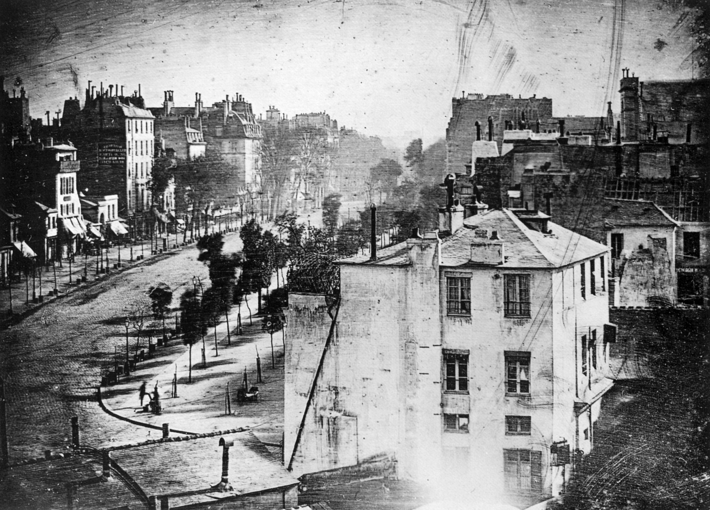

หลุยส์ ดาแกร์

หลุยส์ ดาแกร์
หลุยส์-ฌัก-ม็องเด ดาแกร์ (Louis-Jacques-Mandé Daguerre) หรือที่รู้จักกันในชื่อ หลุยส์ ดาแกร์ เป็นศิลปิน จิตรกร และนักประดิษฐ์ชาวฝรั่งเศส ผู้มีบทบาทสำคัญในการพลิกโฉมหน้าประวัติศาสตร์ ด้วยการคิดค้นและพัฒนากระบวนการถ่ายภาพที่สามารถนำมาใช้งานได้จริงและให้ผลลัพธ์ที่คมชัด ซึ่งเป็นจุดเริ่มต้นของการถ่ายภาพที่แพร่หลายไปสู่สาธารณชนทั่วโลก
เกิดเมื่อวันที่ 18 พฤศจิกายน 1787 (พ.ศ. 2330) – เสียชีวิต 10 กรกฎาคม 1851 (พ.ศ. 2394) ก่อนที่จะก้าวเข้าสู่วงการถ่ายภาพ ดาแกร์เป็นจิตรกรและนักออกแบบฉากละครที่มีชื่อเสียง เขาเป็นผู้คิดค้น "ดิโอรามา" (Diorama) ในปี 1822 (พ.ศ. 2365) ซึ่งเป็นโรงละครที่ใช้ภาพวาดทิวทัศน์ขนาดใหญ่ร่วมกับการจัดแสงและเทคนิคพิเศษเพื่อสร้างภาพลวงตาที่สมจริงให้กับผู้ชม
ในช่วงแรก ดาแกร์ได้ร่วมงานกับผู้บุกเบิกชาวฝรั่งเศสอีกคนหนึ่งคือ นีเซฟอร์ นิเอปซ์ (Nicéphore Niépce) ซึ่งเป็นผู้สร้างภาพถ่ายที่ได้รับการยอมรับว่าเป็นภาพถ่ายภาพแรกของโลกในปี ค.ศ. 1826 (พ.ศ. 2369) หลังจากนิเอปซ์เสียชีวิต ดาแกร์ยังคงดำเนินการทดลองต่อไป และได้ค้นพบว่าเขาสามารถสร้างภาพถาวรบนแผ่นเงินที่ผ่านการเคลือบด้วยไอโอดีนในกล้องถ่ายภาพ โดยการนำแผ่นดังกล่าวไปสัมผัสกับไอปรอท และจากนั้นจึงล้างด้วยสารละลายเกลือ กระบวนการนี้ได้กลายมาเป็นที่รู้จักในชื่อว่า “กระบวนการดาแกโรไทป์” (Daguerreotype process)
ความสำเร็จของดาแกร์โรไทป์สร้างความตื่นตะลึงไปทั่ววงการวิทยาศาสตร์และศิลปะ ในปี 1839 (พ.ศ. 2382) รัฐบาลฝรั่งเศสได้ตัดสินใจซื้อลิขสิทธิ์สิ่งประดิษฐ์ชิ้นนี้ และมอบเงินบำนาญตลอดชีพให้กับดาแกร์เป็นการตอบแทน จากนั้นรัฐบาลฝรั่งเศสได้ประกาศเผยแพร่รายละเอียดของกระบวนการนี้ให้สาธารณชนรับทราบโดยระบุว่าเป็น "ของขวัญแก่โลก" (Free to the world) ในวันที่ 19 สิงหาคม 1839 (พ.ศ. 2382) การประกาศครั้งนี้ส่งผลให้เทคโนโลยีการถ่ายภาพของดาแกร์แพร่กระจายไปทั่วโลกอย่างรวดเร็ว และวันที่ 19 สิงหาคม ของทุกปี ก็ได้ถูกกำหนดให้เป็น "วันถ่ายภาพโลก" (World Photography Day) เพื่อเป็นเกียรติแก่การค้นพบที่ยิ่งใหญ่นี้
https://www.lomography.co.th/school/louis-daguerre-fa-2evjdae3

Boulevard du Temple
ผลงานชิ้นเอกที่สร้างชื่อเสียงให้กับดาแกร์คือภาพถ่ายที่มีชื่อว่า "Boulevard du Temple" ถ่ายขึ้นในปี 1838 (พ.ศ. 2381) ภาพนี้เป็นภาพทิวทัศน์ของถนนในกรุงปารีส และมีความสำคัญอย่างยิ่งยวดในประวัติศาสตร์ เนื่องจากเป็น ภาพถ่ายใบแรกของโลกที่ปรากฏร่างของมนุษย์ แม้ถนนสายนั้นจะพลุกพล่านไปด้วยผู้คนและรถม้า แต่ด้วยเวลาการเปิดรับแสงที่นานราว 10 นาที ทำให้สิ่งเคลื่อนไหวต่างๆ ไม่ถูกบันทึกไว้บนแผ่นภาพ ยกเว้นชายคนหนึ่งที่ยืนนิ่งขัดรองเท้าอยู่บริเวณมุมถนนด้านล่างซ้ายของภาพ ซึ่งยืนนิ่งนานพอที่จะถูกบันทึกไว้ได้